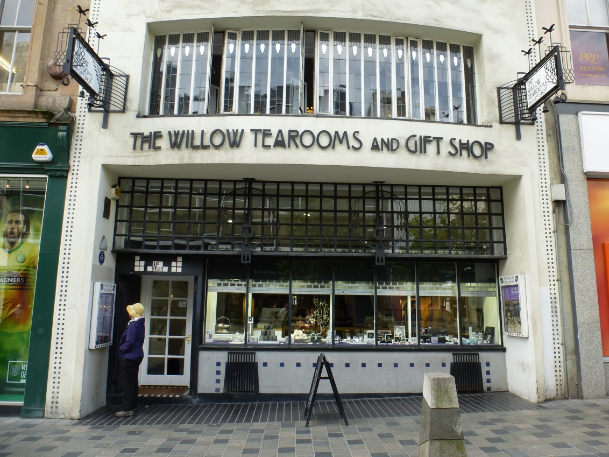
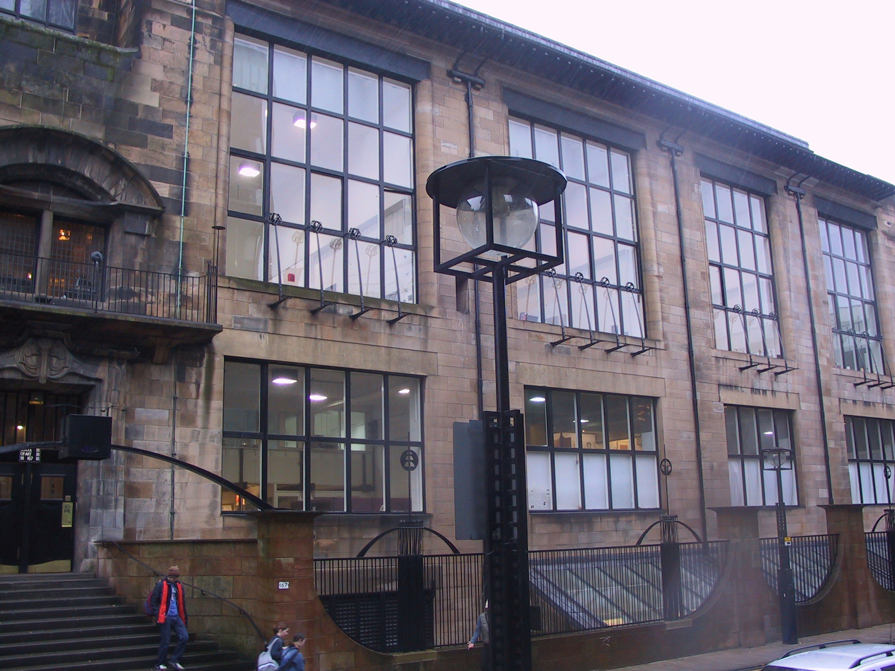
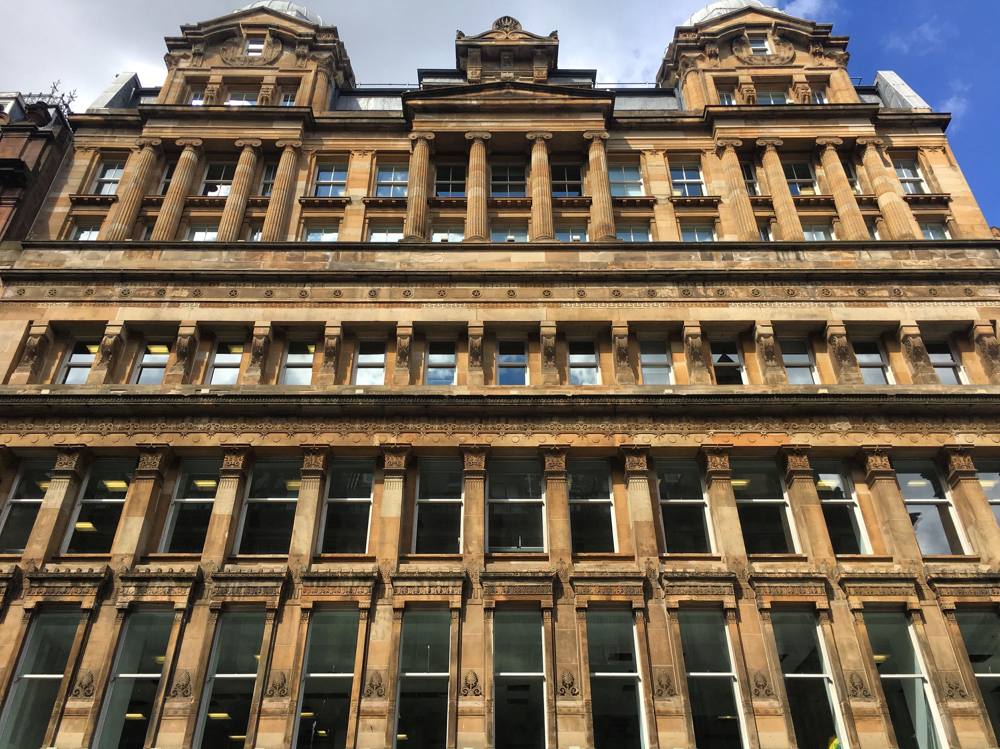
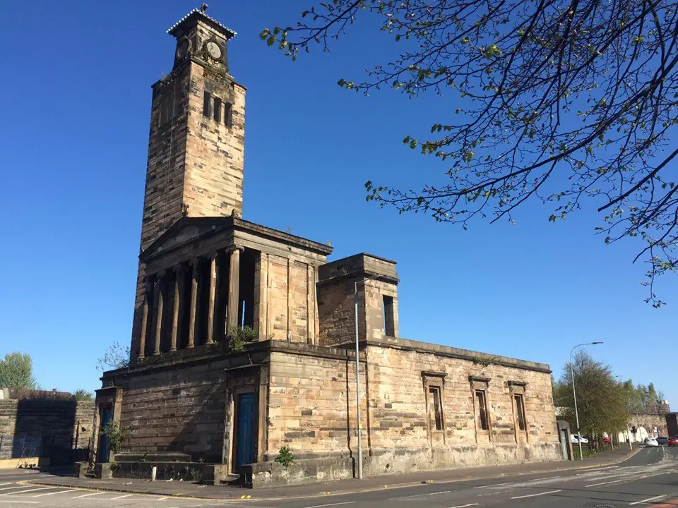
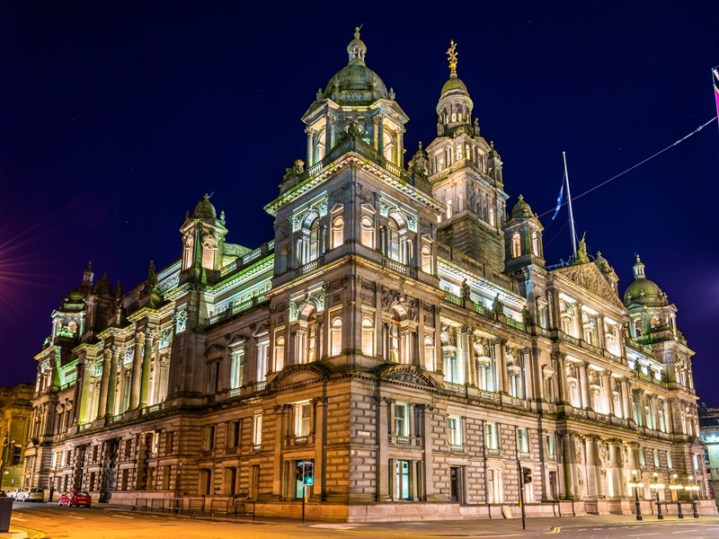
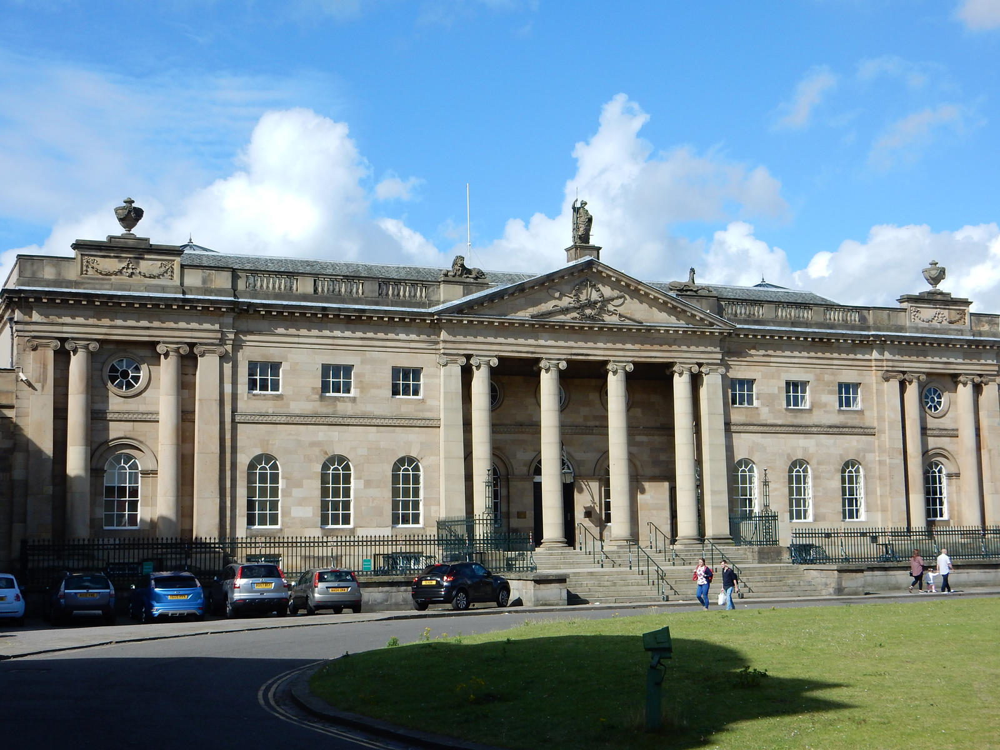

Influential Glasgow Architects
Over the centuries, many talented designers and visionaries have contributed to Glasgow's distinctive look. Here are three renowned architects whose legacies still define the city today.
Charles Rennie Mackintosh
A leading figure of the Glasgow Style in the early 20th century, Mackintosh fused Art Nouveau with Scottish baronial influences. His work on the Glasgow School of Art and the Willow Tea Rooms became iconic symbols of modern design.


Alexander "Greek" Thomson
Known for his distinctive neoclassical style inspired by ancient Greek architecture, Thomson designed numerous tenements, churches, and villas across Glasgow. His bold use of geometric forms and ornamentation earned him the nickname "Greek" Thomson.


David Hamilton
Often referred to as the "Father of the Profession" in Glasgow, Hamilton's designs include public buildings, churches, and private residences. His refined neoclassical style paved the way for future generations of architects in the city.

